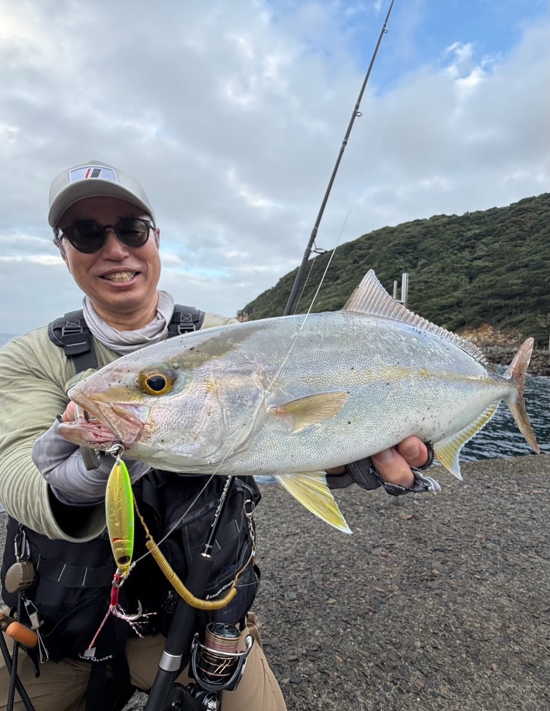
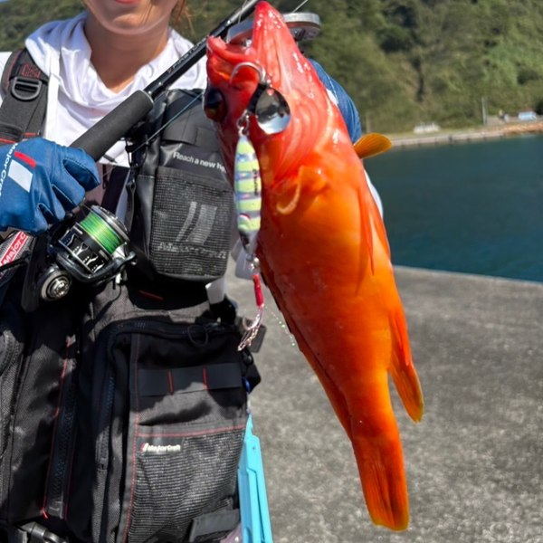
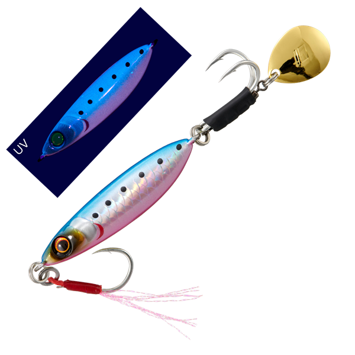
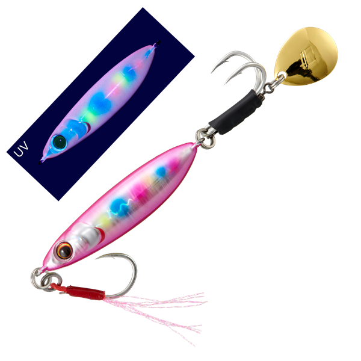
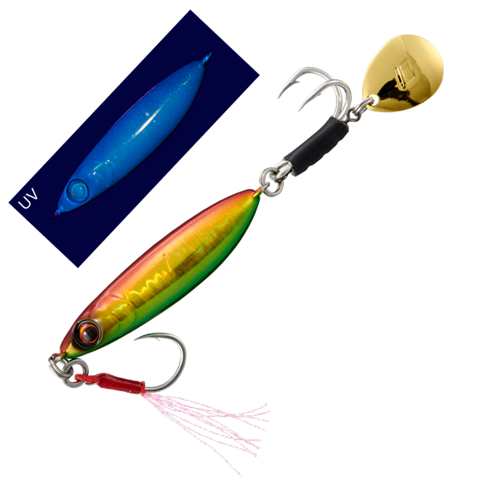
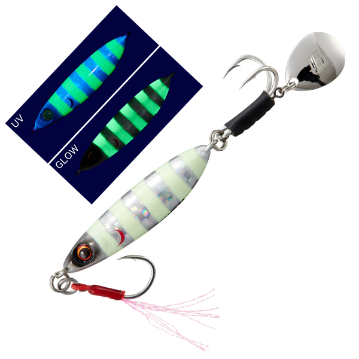

ジグパラ ハイスピン
ジグパラ ハイスピンはMajor Craft（メジャークラフト）のショア用ブレードジグです。
ショアブレードジギングの要素を詰め込んだモデルで、リア重心で高速巻きでもボディがぶれず、ブレード付きWフックでリアから食うサワラ・サゴシを掛けられるのが最大の魅力です。

画像出典:メジャークラフト公式HP
スペック
- メーカー
- Major Craft（メジャークラフト）
- タイプ
- ブレードジグ（リア重心）
- 重さ
- 30g／40g／60g
- フック
- フロント：アシストフック／リア：ブレード付きWフック
- カラー
- 全8色
- ターゲット
- サワラ・サゴシ・青物・根魚（アカハタ・アコウなど）
- 価格
- 990円〜1,100円（税込）
- 発売
- 2026年11月
▼今すぐチェック
ジグパラ ハイスピンの特徴
高速巻きでも安定して、リアのWフックでサワラを掛けるショア用ブレードジグ
-
高速で巻いてもブレードが破綻せずに回る
リア重心のバランスで、速く巻いてもボディが揺れず、テールのブレードも破綻せずに回り続ける。高速巻きに反応するサワラや青物に、しっかり見せられる。遠投性能が高く、速く沈んだあとは浮き上がりにくいので、狙ったレンジを長くキープできる。
-
ブレードだけが回るブレード付きWフック
リアはブレードのみが回転する構造で、フックは回らずに一定の向きを保つ。針掛かりがよく、はじかれにくいので、リアから食ってくるサワラ・サゴシにしっかりフッキングできる。
-
マイクロベイトにも効くコンパクトシルエット
コンパクトなシルエットで、小さなベイトを食べている時にも合わせやすい。テールのブレードが、大物から根魚まで幅広い魚にアピールする。
ジグパラ ハイスピンの使い方
堤防やサーフからフルキャストして狙いのレンジまで沈め、ロッドを動かさずに高速でただ巻きするのが基本です。
リア重心で速く巻いても姿勢が崩れにくいので、サワラ・サゴシが好む速いスピードで引き続けられます。反応が無い時は、沈めるカウントを変えて狙う層を探りましょう。


高速巻きで青物、底付近を巻いて根魚も。ジグパラ ハイスピン1本でいろいろな魚が釣れています。
画像出典:メジャークラフト公式Threads
ジグパラ ハイスピンの得意な状況
秋を中心に、サワラ・サゴシが岸近くまで回ってくる場面が出番です。
遠投できて浮き上がりにくいので、沖のブレイクを回遊するサワラ・サゴシにも届いて釣れるのが強みです。
高速で巻いてもブレードが破綻せずに回るので、サワラを含む青物全般に強いのも特徴です。速い巻きでハマチやカンパチの仲間が食ってくることもあります。
さらに、ボトムまで沈めて底付近を巻けば、アカハタやアコウ（キジハタ）などの根魚もよく釣れるので、1本で青物から根魚まで狙えます。
ワンポイント
サワラ・サゴシの鋭い歯でリーダーが切られやすいので、1匹釣るごとにリーダーの傷を指で確かめて、ざらつきがあれば結び直すのがコツです。速巻きでのバイトは、巻き続けて重みを乗せてからアワセましょう。
サワラ狙いならワイヤーリーダーも
サワラ・サゴシの鋭い歯でリーダーごとジグを切られないように、ジグの前に30cm以内の短いワイヤーリーダーを付けておくと安心です。カッターが少ない日は外して、状況に合わせて使い分けましょう。くわしくはサワラのブレードジギング完全ガイドで紹介しています。

ジグパラ ハイスピンの重さの使い分け
| 重さ | 価格（税込） | 得意な場面 |
|---|---|---|
| 30g | 990円 | 堤防の浅場や、遠投より手返しを重視したい時に |
| 40g | 1,045円 | 堤防でもサーフでも使いやすい基本の重さ |
| 60g | 1,100円 | 遠くのナブラを狙いたい時や、水深・潮の速い場所に |
カラーは全8色で、多くのカラーがUV（ケイムラ）仕様です。定番のショアジギングジグ「ジグパラショート」と同じシリーズです。
人気カラー
ジグパラ ハイスピンは全8色展開。人気カラーを紹介します。

ブルーピンクイワシ（UV）イワシをベイトにしている時の定番。ゴールドのブレード付き。

ピンクキャンディ（UV）朝マズメや濁りの日に目立たせたいピンク系。

レッドゴールドグリーン（UV）赤金系のアピールカラー。曇りや夕マズメに。

ゼブラグロー（UV）グローのゼブラ柄で、薄暗い時間や深場で目立つ。
画像出典:メジャークラフト公式HP
▼今すぐチェック
ジグパラ ハイスピンに似ているルアー
-
 サムライジグR スピン
ダイワ
詳細はこちら＞
サムライジグR スピン
ダイワ
詳細はこちら＞
小型ブレードで超早巻きに対応するブレードジグ。堤防からのサワラ・サゴシ狙いの定番。
-
 ドラッグメタル ブレッチ
DUO
詳細はこちら＞
ドラッグメタル ブレッチ
DUO
詳細はこちら＞
独立回転ブレードとダブルフックのサワラ専用ブレードジグ。
-
 ジグパラショート
メジャークラフト
詳細はこちら＞
ジグパラショート
メジャークラフト
詳細はこちら＞
同じジグパラシリーズの定番ショアジギングジグ。ブレードなしでテンポよく探りたい時に。